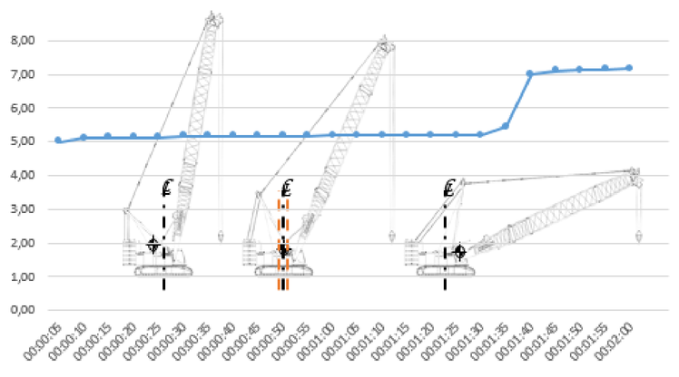

Messung durchführen
Die Messuhr kann vorne oder hinten an der Unterkante des Oberwagens montiert werden. Die Position der Messuhr wird nach der Montage für alle Messungen verwendet.
Zu Beginn der Messung liegt der Maschinenschwerpunkt bei halbierten Wälzkreisdurchmesser hinter der Drehverbindung. Nach Abschluss der Messung liegt der Maschieenschwerpunkt bei halbierten Wälzkreisdurchmesser vor der Drehverbindung.
Messuhr 1 an Unterkante 2 montieren. |
Messtaster der Messuhr vertikal an Unterkante 3 montieren. |
Fahrwerk bedienen (Weitere Informationen siehe: „Fahrwerk“). |
Anzeige Schwerpunktlage wird am Bildschirm eingeblendet: |
Sicherstellen, dass Winde1 während Verlagerung des Maschinenschwerpunkts still steht. |
Sicherstellen, dass Winde2 während Verlagerung des Maschinenschwerpunkts still steht. |
Sicherstellen, dass Hilfswinde während Verlagerung des Maschinenschwerpunkts still steht. |
Sicherstellen, dass Drehwerk während Verlagerung des Maschinenschwerpunkts still steht. |
Hauptausleger heben bis Außermittigkeit 1 des Schwerpunkts einen halben Wälzkreisdurchmesser hinter Drehverbindung liegt. |
Messuhr auf 0 stellen. |
Kamera auf Anzeige der Messuhr ausrichten. |
Videoaufnahme starten und gleichzeitig Hauptausleger senken. |
Hauptausleger maximal 2 Minuten senken bis Außermittigkeit 1 des Schwerpunkts der Maschine einen halben Wälzkreisdurchmesser vor der Drehverbindung liegt. |
Videoaufnahme stoppen. |
Excel-Datei öffnen. |
Videoaufnahme abspielen. |
Messwerte in 5 Sekunden-Schritten in Spalte 1 eintragen. |
In Feld 2 klicken. |
Menüreiter Pivot-Tabelle wird in Menüleiste eingeblendet. |
Registerkarte Analysieren im Menüreiter Pivot-Tabelle klicken. |
Menüband der Pivot-Tabelle wird eingeblendet. |
Schaltfläche Aktualisieren im Menüband der Pivot-Tabelle klicken. |
Diagramm des Verschleißes der Drehverbindung wird eingeblendet: |

Fig. 5978: Diagramm des Verschleißes der Drehverbindung
Fig. 5978: Diagramm des Verschleißes der Drehverbindung
Formularfelder der Excel-Datei ausfüllen. |
Excel-Datei unter anderem Namen speichern. |
Excel-Datei drucken. |
Oberwagen um 90° drehen. |
Kontrollmessung mit gleichem Rüstzustand nach gleicher Vorgehensweise durchführen. |